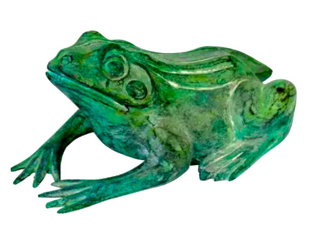

XXXII.
“Heresy,” Jakob Rums said, as we stood in the Garden of the Gods. He wore the highly bedizened outfit designed for el generalissimo. “If there’s any religion that should be banned, that’s the one.”
“I’m not sure that it’s a religion, El Generalissimo” I said.
Jakob threw a hand in dismissal. “Just to be unambiguous: – the Kingdom of Antarctica is firmly in league with :: TEAM DOCTOR DALTON :: . Especially after we signed a multimillion credit deal with them for naming rights of all our palace bedrooms.”
“Oh?” I said. “Do we have a new palace? Our old one got occupied by the Penguin Liberation Front.”
Another dismissive hand. “We’re constructing a facility nearby that will be impervious to adult influences,” Jakob said.
“Oh? How’s that?”
Jakob smiled. “The Kingdom of Antarctica is always making new friends.”
I wanted to ask him where Andrew was, but the AAAs highly discouraged it.
Luuk walked in, carrying a large statue of a frog.

“Where’d you get that?” I asked.
“Oh, a foreign land where they worship frogs for their transformational powers,” Luuk said. “Going from gill-users to lung-breathers and all.” Then he set the frog next to Ingurgis.
“Mighty large amphibian,” I said.
“You’re telling me,” Luuk said, patting the palms of his hands together.
I turned to Jakob, el generalissimo of the moment. “I am confused,” I said. “Why would you want to prohibit the sri phepel stuff? I thought our religious policy was: the more the merrier? After all, don’t we let Commie John spew his nonsense and run a company even though his worldview is antithetical to King Leroy?”
Jakob shook his head. “Sometimes you disappoint me, Xiander.”
“Wait, what?”
“Commie John’s philosophy is not antithetical to the Kingdom’s,” he said. “I thought you were more of a sophisticated thinker.”
“Ummm… one advocates total private property and one advocates the abolition of private ownership?”
“Superficial misunderstanding. The Kingdom’s main emphasis is not ownership; it is production. And Commie John loves to produce. He has no qualms about pulling resources out of the terra and refashioning them to serve some artificial purpose.”
“Okay.”
“Meanwhile, this Tree guy you mention. He wants there to be NO COMPULSION TO DO ANYTHING. He wants people to become impervious to external manipulations. How in the kurnugia would that be helpful to our society? We don’t want penguins to return to their resting state of huddling naked in the cold and pissing on their feet for warmth!”
“Definitely not!” Luuk hollered, repositioning the frog statue.
Suddenly there was a buzzing sound. Under the canopy of the forest and through the branches, a NyleDrone flew over and deposited a small box at my feet. Then it flew away.
“What’s this?” I asked.
“Just because the indigenous wanted this frog to be a boring stone color,” Jakob said, “doesn’t mean we have to.” Then he sent a t-t telling me to clean the stone and repaint it. The AAAs agreed and I didn’t really have a good reason not to. So I opened up the box and pulled out the supplies.
“Luuk,” I said. “Are you excited that BCEC is about to go back in session?”
“No,” he said. “What kind of question is that?”
“Not even with the revolution you’re about to lead?”
He laughed. “I’m not sure about that. But I do appreciate the compensation you’re attempting to arrange. Jakob told me that you were the first one donating their time with the magickSuitcase to me. Thanks, buddy!”
I shook my head and scrubbed the stone on the frog statue. “No problem.”
“If you ever want to come over and use it, feel free. Maybe I’ll even show you a few tricks.”
I wanted to say stop, but I knew what narrative that built into.
“Thank you for your generosity,” I said.
“No problem, buddy,” Luuk said and he smacked me hard on the back.